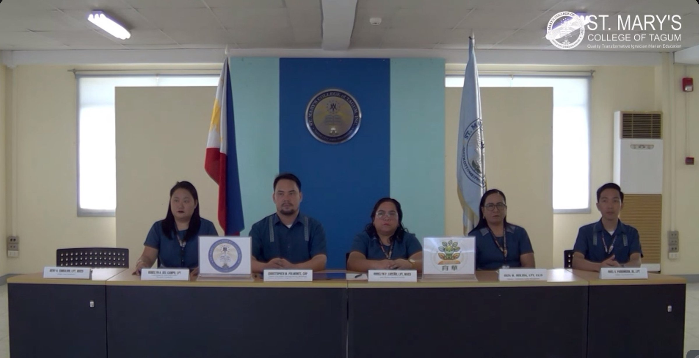
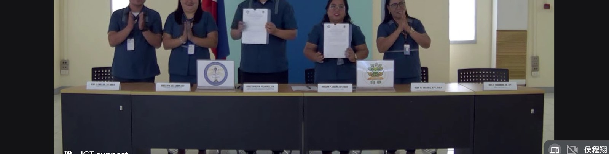
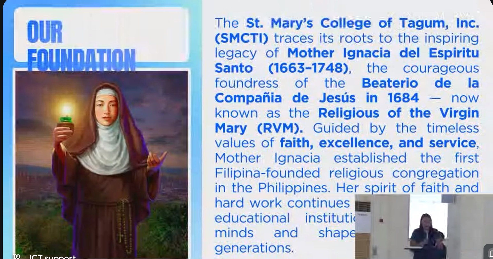
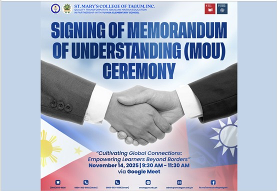

A coastal school of fewer than fifty children signs its first international partnership — and opens a door to the world.
On November 14, 2025, Yuhua Elementary and St. Mary's College of Tagum, Inc. (SMCTI) in Davao del Norte, Philippines, signed a five-year Memorandum of Understanding over Google Meet. Under the theme “Cultivating Global Connections: Empowering Learners Beyond Borders,” the two schools agreed to cooperate across four areas — research, education, community service, and human-resource development — from 2025 through 2030.
The signing followed a first official video conference held on October 9, 2025. On the day itself, the ceremony opened with prayers and the national anthems of both countries, an audio-visual presentation, and the introduction of each school's history and background. SMCTI Basic Education Principal Rodelyn P. Luceño and Yuhua Principal Chen Chih-ming each offered welcome remarks; a student intermission number from the Philippine side followed, before the official signing and a warm exchange of messages of gratitude.
Founded in 1948, St. Mary's College of Tagum traces its roots to Mother Ignacia del Espíritu Santo (1663–1748), foundress of the first Filipina-founded religious congregation — now the Religious of the Virgin Mary — guided by the values of faith, excellence, and service. For a school of fewer than fifty students on Taiwan's western coast, this MOU is a direct channel to international academic exchange: student placement, joint activities, and shared learning across the sea. A short-term virtual mobility conference is already on the calendar.
2025 年 11 月 14 日，育華國小與菲律賓達沃德爾北省塔古姆市的聖瑪利亞學院（St. Mary's College of Tagum, Inc., SMCTI），透過 Google Meet 正式簽署合作備忘錄，為期五年（2025–2030），涵蓋研究、教育、社區服務與人力資源發展四大面向。簽約主題為「Cultivating Global Connections: Empowering Learners Beyond Borders」（培育全球連結、賦能跨越國界的學習者）。
此前雙方已於 10 月 9 日舉行首次正式視訊會議。簽約當天，典禮以祈禱與兩國國歌揭開序幕，並進行學校簡報與校史介紹；菲方基礎教育部校長 Rodelyn P. Luceño 與育華國小陳志明校長分別致歡迎詞，菲方學生並帶來中場表演，隨後正式完成簽署、互致感謝。聖瑪利亞學院創校於 1948 年，其精神可追溯至 1663–1748 年的 Mother Ignacia del Espíritu Santo——菲律賓第一個由本地女性創立的修會（今 RVM 修會）創辦人，以信仰、卓越與服務為核心價值。
對於彰化西南沿海一所不到五十名學生的小校而言，這份 MOU 打開了一條通往國際學術交流的直接管道——學生交換、聯合活動、跨海共學；雙方並已排定短期線上交流會議的時程。




Source · 彰化縣教育處國際教育 · MOU Ref. YHES_SIS_MoU_01-2025
In partnership with 彰化縣人師教育協會 · My Culture Connect